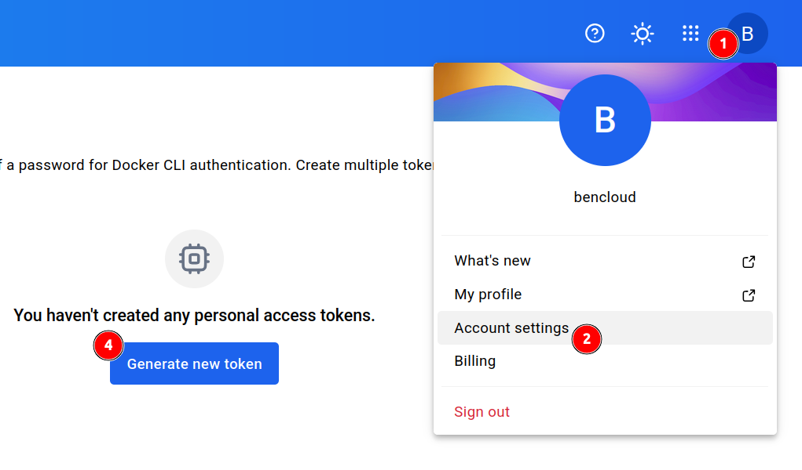
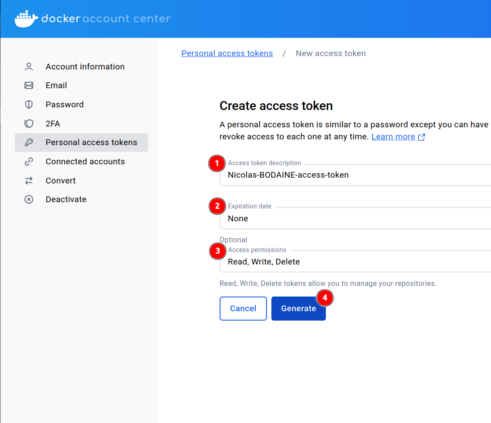
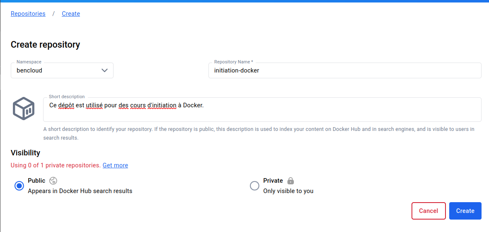
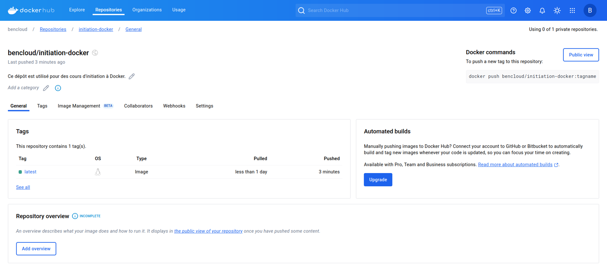

Distribuer ses images : Docker Hub et registre privé¶
Résumé
Une image construite sur une VM ne sert qu'à cette VM. Pour la donner à un collègue, la déployer sur un autre serveur ou sur tout un cluster, on la range dans un registre : un serveur qui stocke des images et les distribue avec docker push et docker pull.
Cette partie explique comment se lit le nom complet d'une image, comment publier sur Docker Hub avec un jeton d'accès (et non son mot de passe), puis monte un registre privé dans le lab, utilisé ensuite par le cluster Swarm de la partie 16. On y découvre aussi pourquoi Docker refuse un registre sans HTTPS, et comment l'autoriser sans rien casser.
| Propriété | Valeur |
|---|---|
| Difficulté | Intermédiaire |
| Durée estimée | 1 h 30 |
| Version décrite | Docker Engine 29.10, image registry:3 (Distribution 3.1), Docker Hub (novembre 2026) |
| Place dans le parcours | Partie 15 sur 17 du parcours Docker — jour 5 |
| Dernière mise à jour | 2026-11-24 |
Convention de lecture
🖥️ PC hôte · 🐧 VM docker-hote, connecté en adminlab · 🌐 navigateur du PC · ✍️ exercice · 🛟 instantané. Point de départ : la fin de la partie 14 (images web et debian-ssh construites).
1. Registre, dépôt, étiquette : bien lire le nom d'une image¶
Un registre (registry) est un serveur qui stocke des images. Docker Hub est le registre public de Docker, celui qu'on utilise depuis le début sans le savoir. D'autres existent : GitHub Container Registry (ghcr.io, croisé en partie 13 avec Open WebUI), le registre de GitLab, Quay, Harbor pour héberger le sien…
Le nom complet d'une image se lit comme une adresse postale :
registre / espace / dépôt : étiquette
docker.io/library/nginx:latest
ghcr.io/open-webui/open-webui:main
192.168.8.71:5000/web:1.0
| Partie | Rôle | Si on l'omet |
|---|---|---|
| registre | Le serveur qui stocke l'image (nom ou IP, et port) | docker.io (Docker Hub) |
| espace (namespace) | Le compte ou l'organisation propriétaire | library, l'espace des images officielles du Hub |
| dépôt (repository) | Le nom de l'application ; un dépôt rassemble toutes les versions d'une image | obligatoire |
| étiquette (tag) | La version | latest |
Ainsi, docker pull nginx télécharge en réalité docker.io/library/nginx:latest. Et pour envoyer une image quelque part, il faut d'abord lui donner un nom qui contient la bonne adresse : c'est le rôle de docker tag.
![Schéma : un nom d'image se lit registre / espace / dépôt : étiquette. Trois exemples : nginx, que Docker complète en docker.io/library/nginx:latest ; <identifiant>/initiation-docker:tagname, sur Docker Hub avec un compte ; 192.168.8.71:5000/web:1.0, sur le registre privé du lab. En dessous : docker tag donne à l'image web le nom localhost:5000/web:1.0 (même image, aucune copie), docker push l'envoie au registre privé IP-de-la-VM:5000, et docker pull IP-de-la-VM:5000/web:1.0 la télécharge sur une autre machine.](../images/nom-d-une-image.svg)
Le nom d'une image est une adresse : docker tag la change, docker push et docker pull s'en servent.
Les limites de téléchargement de Docker Hub
Docker Hub limite les téléchargements : 100 par période de 6 heures sans compte (par adresse IP publique), 200 avec un compte personnel gratuit connecté par docker login. Dans une salle où tous les PC sortent par la même adresse IP, la limite anonyme peut être atteinte : se connecter, ou installer un registre local qui garde une copie des images, règle le problème.
2. Publier une image sur Docker Hub¶
Publier sur Docker Hub demande un compte personnel, gratuit, à créer sur hub.docker.com (bouton Sign up, adresse e-mail à confirmer). Cette section décrit la démarche complète ; sans compte, on peut passer directement au registre privé de la section 3, qui suit exactement les mêmes gestes.
Dans les commandes, <identifiant> est le nom du compte Docker Hub (en minuscules).
2.1 Créer un jeton d'accès personnel¶
Pour la ligne de commande, on n'utilise pas son mot de passe, mais un jeton d'accès personnel (Personal Access Token). C'est un mot de passe dédié à un usage, qu'on peut limiter (lecture seule, par exemple), faire expirer, et révoquer sans toucher au vrai mot de passe.
-
🌐 Se connecter à Docker Hub, cliquer sur l'avatar en haut à droite, puis Account settings (paramètres du compte).
-
🌐 Dans le menu de gauche, cliquer sur Personal access tokens (jetons d'accès personnels), puis Generate new token (générer un jeton) :

Avatar > Account settings, puis Personal access tokens > Generate new token
-
🌐 Remplir le formulaire :
Champ Valeur conseillée Access token description (description) Un nom qui dit à quoi sert le jeton, par exemple vm-docker-hoteExpiration date (date d'expiration) 30 days (30 jours) pour un TP ; None(jamais) est possible mais déconseilléAccess permissions (droits) Read & Write (lecture et écriture) : suffisant pour pousser une image. Read, Write, Delete ajoute la suppression, inutile ici 
Le formulaire de création du jeton. Les réglages visibles (tous les droits, aucune expiration) sont à éviter : choisir Read & Write et 30 jours
-
🌐 Cliquer sur Generate, puis copier le jeton (il commence par
dckr_pat_). Il ne sera plus jamais affiché : le ranger dans un gestionnaire de mots de passe. Un jeton perdu se révoque et se recrée.
2.2 Créer un dépôt¶
-
🌐 Dans Docker Hub, menu My Hub > Repositories (dépôts), puis Create repository (créer un dépôt).
-
🌐 Remplir :
- Namespace : son identifiant ;
- Repository Name :
initiation-docker(minuscules, chiffres,-et_seulement ; impossible à renommer ensuite) ; - Short description : une phrase, facultative ;
- Visibility : Public (tout le monde peut télécharger l'image) ou Private (soi seul). Un compte personnel gratuit a droit à un dépôt privé.

Création du dépôt
initiation-docker: le compteur « Using 0 of 1 private repositories » rappelle le dépôt privé unique d'un compte gratuit -
🌐 Cliquer sur Create. La page du dépôt rappelle la commande à utiliser :
docker push <identifiant>/initiation-docker:tagname.
Le dépôt peut aussi se créer tout seul
Pousser une image vers <identifiant>/un-nom crée le dépôt automatiquement s'il n'existe pas, avec la visibilité par défaut du compte. Le créer à l'avance permet de choisir sa visibilité et sa description.
2.3 Se connecter depuis la VM¶
🐧 Se connecter en donnant son identifiant :
À l'invite Password:, coller le jeton (rien ne s'affiche pendant la saisie, c'est normal), puis Enter. Docker répond Login Succeeded, précédé d'un avertissement :
WARNING! Your credentials are stored unencrypted in '/home/adminlab/.docker/config.json'.
Configure a credential helper to remove this warning. See
https://docs.docker.com/go/credential-store/
Login Succeeded
Sur une Debian sans bureau, aucun coffre de mots de passe n'est installé : le jeton est rangé dans ~/.docker/config.json, simplement encodé en base64 (ce n'est pas un chiffrement), lisible seulement par adminlab (droits 600). C'est une raison de plus d'utiliser un jeton limité et qui expire. docker logout l'efface.
Et docker login sans -u ?
Sans identifiant, Docker propose une connexion par le navigateur :
i Info → Using web-based login. To sign in with credentials on the command line, use 'docker login -u <username>'
Your one-time device confirmation code is: XXXX-XXXX
Open this URL to authenticate: https://login.docker.com/activate?user_code=XXXX-XXXX
On ouvre l'adresse sur le PC, on se connecte, on confirme le code, et la VM est connectée. Pratique sur un poste de travail ; sur un serveur ou dans un script, on préfère -u et un jeton.
2.4 Étiqueter et pousser une image construite avec un Dockerfile¶
-
🐧 Lister les images locales :
-
🐧 Donner à l'image
web(partie 14) un second nom, qui contient l'adresse du dépôt :Format :
docker tag <image source> <identifiant>/<dépôt>:<étiquette>. L'image source peut être désignée par son nom (web) ou par son ID (la colonneIDdedocker image ls).docker tagne copie rien : les deux noms désignent la même image (même ID). -
🐧 Envoyer l'image :
Docker envoie les couches une par une (
Pushed), puis affiche l'empreinte de l'image (digest: sha256:…). Une couche que le registre possède déjà n'est pas renvoyée (Layer already exists) : les couches dehttpdpartagées par plusieurs images ne voyagent qu'une fois. -
🌐 Ouvrir le dépôt sur Docker Hub : l'étiquette
1.0apparaît dans la section Tags de l'onglet General (et dans l'onglet Tags), avec sa date d'envoi.
L'image publiée apparaît dans la section Tags (étiquettes) du dépôt, avec la date de son envoi (Pushed)
-
🐧 N'importe quelle machine peut maintenant la récupérer (après
docker loginsi le dépôt est privé) :
2.5 Publier un conteneur modifié avec docker commit¶
On peut aussi publier une image créée à partir d'un conteneur existant (partie 6) : docker commit lui donne directement le nom complet. <conteneur> est le nom (ou l'ID) d'un conteneur, visible avec docker ps -a.
docker commit <conteneur> <identifiant>/initiation-docker:commit
docker push <identifiant>/initiation-docker:commit
Ça fonctionne, mais l'image reste une boîte noire (partie 6) : pour une image destinée à d'autres, le Dockerfile est préférable.
Une image publique est publique pour tout le monde
Avant de pousser une image dans un dépôt public, vérifier qu'elle ne contient aucun secret : mot de passe dans un RUN (visible avec docker history, partie 14), fichier .env, clé SSH copiée par erreur… N'importe qui peut télécharger l'image et en lire toutes les couches.
3. TP : un registre privé dans le lab¶
Un registre privé garde les images chez soi : pas de compte, pas de limite de téléchargement, des images internes qui ne sortent pas de l'entreprise. Docker fournit le logiciel de registre lui-même… sous forme d'image : registry.
3.1 Démarrer le registre¶
-
🐧 Lancer le registre, avec un volume pour ses données :
docker run -d -p 5000:5000 --restart always --name registre \ -v registre-data:/var/lib/registry registry:3Option Rôle -p 5000:5000Le registre écoute sur le port 5000 --restart alwaysIl redémarre avec Docker, comme un service -v registre-data:/var/lib/registryLes images stockées vivent dans un volume : elles survivent à la suppression du conteneur registry:3L'image officielle du registre (projet Distribution), en version 3 -
🐧 Vérifier qu'il répond. Le registre parle HTTP et expose une petite interface de programmation (API) :
docker ps --filter name=registre --format '{{.Names}} | {{.Image}} | {{.Status}} | {{.Ports}}' curl -s http://localhost:5000/v2/_catalogregistre | registry:3 | Up 2 seconds | 0.0.0.0:5000->5000/tcp, [::]:5000->5000/tcp {"repositories":[]}_catalogliste les dépôts : vide pour l'instant.
3.2 Pousser une image¶
-
🐧 Donner à l'image
webun nom qui contient l'adresse du registre, puis la pousser : -
🐧 Pousser aussi l'image SSH, puis interroger le registre :
-
🐧 Preuve que l'image vient bien du registre : supprimer le nom local, puis la retélécharger :
Untagged: localhost:5000/web:1.0 1.0: Pulling from web Digest: sha256:cc2545ccdc357a4d98d07ae4d8dd736072f332e8563560b57d56a6c9b48ccf7f Status: Downloaded newer image for localhost:5000/web:1.0 localhost:5000/web:1.0Untagged(et pasDeleted) : seul le nom a été retiré, car l'image porte encore son autre nom,web:latest.
🐧 Les images stockées sont dans le volume, rangées par dépôt et par couche (sudo du -sh /var/lib/docker/volumes/registre-data/_data : environ 126 Mo pour les deux images).
4. Utiliser le registre depuis une autre machine¶
localhost:5000 ne vaut que sur la VM elle-même. Depuis une autre machine (et en partie 16, depuis les autres nœuds du cluster), il faut utiliser l'adresse IP de la VM.
4.1 Le refus du HTTP¶
🐧 Simuler une autre machine en utilisant l'adresse IP de la VM :
Error response from daemon: failed to resolve reference "192.168.8.71:5000/web:1.0": failed to do request: Head "https://192.168.8.71:5000/v2/web/manifests/1.0": http: server gave HTTP response to HTTPS client
Docker parle HTTPS à tout registre, sauf aux adresses locales (127.0.0.0/8 et ::1, c'est-à-dire localhost). Notre registre ne parle que HTTP : Docker refuse, pour ne pas envoyer ni recevoir d'images en clair sur le réseau sans qu'on l'ait décidé.
4.2 Autoriser ce registre, et seulement lui¶
Pour un lab, on autorise ce registre précis en HTTP avec l'option insecure-registries de /etc/docker/daemon.json, le fichier déjà créé en partie 12 pour les journaux.
-
🐧 Ouvrir le fichier :
-
Ajouter la clé
insecure-registriessans effacer le réglage des journaux : attention à la virgule après l'accolade fermante delog-opts, et à remplacerIP-de-la-VMpar sa vraie adresse :{ "log-driver": "json-file", "log-opts": { "max-size": "10m", "max-file": "3" }, "insecure-registries": ["IP-de-la-VM:5000", "127.0.0.0/8", "::1/128"] }Ne pas oublier
127.0.0.0/8et::1/128Dès qu'on déclare
insecure-registries, la liste remplace la règle par défaut qui autorisaitlocalhost. Avec seulement"IP-de-la-VM:5000", c'estlocalhost:5000qui se met à échouer, avec la même erreurserver gave HTTP response to HTTPS client. Les deux plages locales remettent la règle par défaut. -
🐧 Vérifier la syntaxe, puis redémarrer Docker :
Rappel de la partie 12 : redémarrer Docker arrête et relance tous les conteneurs. Ceux qui ont une politique de redémarrage (
always,unless-stopped) repartent seuls ; les autres restent arrêtés. -
🐧 Vérifier la prise en compte, puis retenter :
docker info | grep -A3 "Insecure Registries" docker pull IP-de-la-VM:5000/web:1.0 docker pull localhost:5000/web:1.0Insecure Registries: 192.168.8.71:5000 127.0.0.0/8 ::1/128 1.0: Pulling from web Digest: sha256:cc2545ccdc357a4d98d07ae4d8dd736072f332e8563560b57d56a6c9b48ccf7f Status: Downloaded newer image for 192.168.8.71:5000/web:1.0 192.168.8.71:5000/web:1.0 … localhost:5000/web:1.0Les deux adresses fonctionnent. Chaque machine qui utilisera ce registre aura besoin du même réglage (ce sera le cas des nœuds Swarm en partie 16).
Un registre en HTTP, sans authentification, c'est pour le lab
Ce registre accepte les images de n'importe qui sur le réseau, et les transmet en clair. En production :
- HTTPS obligatoire, avec un certificat (Let's Encrypt, ou l'autorité interne de l'entreprise) ; le registre peut aussi se placer derrière un reverse proxy comme NPM (partie 9) ;
- une authentification : le registre sait vérifier un fichier de mots de passe (
htpasswd), mais seulement en HTTPS, pour ne pas faire circuler les mots de passe en clair ; - pour une équipe, un registre complet comme Harbor ajoute une interface web, des droits par projet et l'analyse des failles des images (comme Trivy, partie 12).
5. Bien choisir ses étiquettes¶
| Pratique | Pourquoi |
|---|---|
Une étiquette par version (1.0, 1.1, 2.0) |
On sait ce qui tourne, et on peut revenir à la version précédente |
Ne pas compter sur latest |
latest n'est qu'une étiquette comme une autre, posée par défaut : elle ne garantit pas la version la plus récente, et elle change de contenu dans le dos des serveurs |
| Ne jamais réutiliser une étiquette pour un contenu différent | Deux serveurs qui ont tiré web:1.0 à deux dates différentes auraient deux images différentes |
| Pour une certitude absolue : l'empreinte (digest) | web@sha256:cc2545cc… désigne un contenu précis, qui ne peut pas changer |
6. Vérifier son lab¶
Vérifier son lab
🐧 Après la section 4 :
curl -s http://IP-de-la-VM:5000/v2/_catalog
docker info | grep -A3 "Insecure Registries"
docker ps --filter name=registre --format '{{.Names}} {{.Status}}'
Résultat attendu (avec l'adresse de sa VM) :
Prendre l'instantané 06-registre
🛟 🐧 sudo poweroff, puis 🖥️ prendre l'instantané 06-registre de docker-hote. Au redémarrage de la VM, le registre repart tout seul (--restart always).
7. Questions de révision¶
- Décomposer le nom
ghcr.io/open-webui/open-webui:main. Etnginx? - Pourquoi utiliser un jeton d'accès plutôt que son mot de passe Docker Hub avec
docker login? - Que fait exactement
docker tag? Prend-il de la place sur le disque ? docker pull 192.168.8.71:5000/web:1.0répondserver gave HTTP response to HTTPS client. Que se passe-t-il, et comment le régler dans un lab ?- Après avoir ajouté
insecure-registries,docker push localhost:5000/…ne fonctionne plus. Pourquoi ? - Quelles sont les deux protections minimales d'un registre privé en production ?
Corrigé
- Registre
ghcr.io(GitHub Container Registry), espaceopen-webui, dépôtopen-webui, étiquettemain.nginxsignifiedocker.io/library/nginx:latest: registre Docker Hub, espace des images officielles, étiquettelatestpar défaut. - Le jeton est limité (lecture seule, ou lecture et écriture), peut expirer et se révoque seul, sans changer le mot de passe du compte. Il reste stocké sur la VM (
~/.docker/config.json, seulement encodé) : mieux vaut que ce soit un jeton limité qu'un mot de passe qui ouvre tout le compte. - Il donne un nom supplémentaire à une image existante : même ID, aucune copie, aucune place en plus. C'est ce nom qui indique à
docker pushvers quel registre et quel dépôt envoyer l'image. - Docker veut parler HTTPS à ce registre, qui ne parle que HTTP. Dans un lab : ajouter
"IP:5000"àinsecure-registriesdans/etc/docker/daemon.json(sur chaque machine cliente), puis redémarrer Docker. - La liste
insecure-registriesremplace la règle par défaut qui autorisait127.0.0.0/8et::1. Il faut ajouter ces deux plages à la liste. - HTTPS (certificat) et authentification (comptes, droits). Un registre complet comme Harbor ajoute droits par projet et analyse des failles.
Ressources¶
- Docker Hub : créer un dépôt — les champs du formulaire (en anglais).
- Jetons d'accès personnels — créer, limiter et révoquer un jeton.
- Limites d'utilisation de Docker Hub — téléchargements autorisés selon le type de compte.
docker login— connexion par le navigateur, par jeton, et stockage des identifiants.- Déployer un registre (Distribution) — HTTPS, authentification, stockage.
- Tester un registre non sécurisé — l'option
insecure-registrieset ses risques. - Partie précédente : Construire ses images avec un Dockerfile · Partie suivante : Un cluster Docker Swarm.